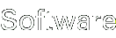

- System Calls
- A list of the system calls provided by the boot ROM
- Bootable CD-Rs
- The structure a normal CD should have to be bootable by the Dreamcast
- IP.BIN and 1ST_READ.BIN
- Descriptions of the two files needed to boot a Dreamcast from GD/CD and how to create them.
- IP0000.BIN files
- Descriptions of the IP0000.BIN which is present on all Dreamcast discs and contain information about the disc.
- VMS Firmware
- Descriptions of VMS firmware calls and system variables.
- VMS Flashrom
- Organization of the VMS 128k flash memory.
- VMS File Header
- Structure of the header that is present at the beginning of every VMS file (or rather a bit in if it's a game file :).
- VMI files
- Structure of VMI files (used when downloading VMS games and data from the web).
- ICONDATA_VMS files
- Structure of ICONDATA_VMS files (used as custom icons for VMS units).
- newlib 1.12.0
- libc implementation for SH and ARM, precompiled and ready to use. The older version 1.9.0 is also available.
- IP upload slave
- A program for the Dreamcast that allows new software to be uploaded through the ethernet interface and run.
- Serial upload slave
- A program for the Dreamcast that allows new software to be uploaded through the serial port and run.
- IP creator
- Small utility for creating IP.BIN from a textual representation of IP0000.BIN. Includes example textfile.
- 1ST_READ.BIN scrambler
- A program to do the neccessary scrambling of the binary file on bootable CDs. Run with -d to descramble.
- VMS assembler
- A macro assembler written in ANSI-C that can assemble programs of the Visual Memory System. Version 1.9
- VMS hardware register definition include file
- An include file for use with the assembler above that defines the addresses of all special function registers in the VMS.
- VMS disassembler
- A disassembler for VMS programs written by John Maushammer. Source code version. You can find the newest version on John's site. Version 0.8ß
- VMS emulator
- An emulator capable of running some VMS games. Slighly more complete now... Source for Dreamcast, UNIX, AmigaOS, MS-DOG and Wintendo. Version 1.9. Dreamcast binary (scrambled) available.
- Nexus memory card tools
- Alternative programs to read/write the contents of Nexus memory cards
without using Wintendo. Currently supports Solaris x86, Linux x86 and AmigaOS. Version 1.4
Cable schematics are available. - AmigaOS binaries
- Precompiled binaries of the above programs for AmigaOS (68k). No ixemul required. Emulator requires AmigaOS2.0 or higher (3.0 or higher preferred).
The sofware in this section is in the Public Domain. This means that I make no copyright claim for it, and that there is no license that restricts its usage.
- Simple DC video example
- Small assembler program setting up a screen and drawing some text on the DC.
- Simple DC serial example
- Small assembler program setting up and talking to the serial port of the DC.
- Maple Bus example
- Example program that does basic Maple Bus communication to list connected units. (In C.)
- CD filesystem example
- Example program that reads CD-ROMs (not GDs). (In C.)
- Sound example
- Example program that plays music. (In C.) (Requires ARM compiler.)
- Hardware 3D graphics example
- Example of how to use the tile accelerator hardware to draw 3D polygons.
- VMS Tetris
- Example source code for a simple Tetris game. Also available as binary ready to upload to the VMS. (If you use Dream Passport you might need to select the VMI file instead.) Version 1.3
- DreamSNES
- Super Nintendo emulator for the Dreamcast. (Still in beta.) Version 0.9
- Flash Internet Settings Adjuster
- A small tool for manipulating your modem (not Broadband) ISP settings, in case the browser you were provided with does not allow you to (DreamKey...).
Last modified: Sun Oct 3 19:33:43 CEST 2004